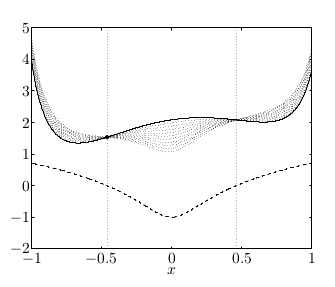

Ders notları [1]'den alınmıştır.
Bu derste genel dışbükey problemlerinde ikizlik konusunu göreceğiz, ek olarak dışbükey olmayan durumlara da bakacağız. İkizlik oldukca genel bir konu.
Önceki derste ikizliği elde etmenin ikinci yönteminde
$$ L(x,u,v) \equiv c^T x + u^T (Ax-b) + v^T (Gx-h) $$
tanımı üzerinden (Lagrangian)
$$ f^* = \min_{x \in C} L(x,u,v) \ge \min_x L(x,u,v) \equiv g(u,v) $$
şeklinde bir formül elde etmiştik, $u,v$ sabitlendiği durumda ve $x \in C$ olurlu çözümleri kümesi olacak şekilde, ve bu küme üzerinden Lagrangian'in, tüm $x$'ler üzerinden olan Lagrangian'dan her zaman daha büyük olacağını görmüştük. Aslında bu çok basit bir fikir ama bu basit ve kuvvetli fikir sayesinde ikizliği genel problemlere uygulamak mümkün oluyor.
Ayrıca, sonradan göreceğimiz üzere, en sağdaki eşitsizlik ikiz çözüm $u,v$ noktasına sıkı (tight), yani olurlu kümeyi bir yana atarak bir şey kaybetmiş olmadık. Yani üstte görülen eşitsizlik bazılarına gevşek gelebilir, ama doğru $u,v$'de son derece şıkıdır.
Neyse devam edersek, yine üstte görülen $g(u,v)$ $u,v$'nin bir fonksiyonu ve işin güzel tarafı çoğunlukla hesaplanabilir bir fonksiyon. Yanı $L(x,u,v)$'yi $x$ üzeriden minimize etmek $u,v$'nin bir fonksiyonu.
Bir diğer deyişle, $g(u,v)$ fonksiyonu $f^*$ üzerinde herhangi bir $u$ ve $v \ge 0$ için bir alt sınır. Ikiz fonksiyonu olarak isimlendirilen $g$.
Lagrangian'ı tekrar düzenleyerek alttakini elde etmiştik,
$$ g(u,v) = \left\{ \begin{array}{ll} -\infty & \text{eğer} \quad c^T + A^Tu + G^T v \ne 0 \\ - b^T u - h^Tu & \text{eğer} \quad c^T + A^Tu + G^T v = 0 \end{array} \right. $$
Şimdi LP'lerden ilerleyip, düşünebildiğimiz en genel optimizasyon formuna bakacağız. Dişbukey (convex) olması şart değil ama tabii ki dışbükey durumlara özel ilgi göstereceğiz. Form,
$$ \min_{x} f(x), \quad \textrm{öyle ki} $$ $$ h_i(x) \le 0, \quad i=1,..,m $$ $$ l_j(x) \le 0, \quad j=1,..,r $$
Eğer sadece dışbükeylige bakıyor olsaydık $f,h_i$'lerin dışbükey, $l_i$'lerin ise doğrusal olması gerekirdi. Lagrangian'i tanımlayalım, hala çok genel bir şekilde yaklaşıyoruz tabii,
$$ L(x,u,v) = f(x) + \sum_{i=1}^{m} u_i h_i(x) + \sum_{i=1}^{r} v_i l_i(x) $$
Eşitlik ve eşitsizlik kritlerini ikiz değişkenler ile çarpıp topluyoruz, ve hedefe ekliyoruz. Daha önce olduğu gibi eşitlik kısıtlamarını çarpan $u_i$'lar sıfır olmamalı çünkü $f(x)$ ile Lagrangian arasında bir ilişki kuracağız, ve ana problemdeki eşitsizlin işaret değiştirmesini istemiyoruz.
Bu arada "ikiz değişkenler" kelimesi duruma göre bazen "Lagrange çarpanı" olarak görülebilir.
Önemli özellik, her $v$ ve $u \ge 0$ için, her olurlu $x$ noktasında
$$ f(x) \ge L(x,u,v) $$
Niye? Daha önce LP'lerle gördüğümüz fikirle aynı durum, olurlu noktalarda
$$ L(x,u,v) = f(x) + \sum_{i=1}^{m} u_i \underbrace{h_i(x)}_{\le 0} + \sum_{i=1}^{r} v_i \underbrace{l_i(x)}_{=0} $$
Olurlu noktalarda $l_i$'ler sıfır, o zaman tüm $l_i$'leri toplamı yokolur, $u_i$'lerin hepsi sıfırdan büyük olmalı ve olurlu noktada $h_i$'ler sıfırdan küçük, pozitif çarpı negatif eşittir negatif, toplam negatif, $f(x)$'den bir değer eksiltilmiş olacaktır, bu da muhakkak $f(x)$'den küçük bir sonuca sebep olacaktır, iki üstteki bu şekilde ispatlanmış olur.
Üstteki fonksiyonu, parçalarını grafiksel olarak alttaki gibi görebiliriz,

Kesiksiz çizgi kriter / hedef fonksiyonu örnek bir $f$. Dikkat edersek görülen $f$ dışbükey değil, bunu genel dışbükey olmayan ortamlarda da tekniğin işlediğini göstermek için yaptık.
Noktalı eğrilerin her biri farklı $u$'lar için $L$'nin değerleri, ayrıca olurlu kümeyi $[-0.46,0.46]$ arasında olacak şekilde seçtik. Yani
$$ \min_{x} f(x), \quad \textrm{öyle ki} $$ $$ h_i(x) \le 0 $$
programını ele almış olduk, noktalalı eğriler ile çizilen ise
$$ L(x,u) = f(x) + u l(x) $$
Devam edersek belli bir $f^*$ minimumu düşünelim,
$$ f^* \ge \min_{x \in C} L(x,u,v) \ge \min_x L(x,u,v) \equiv g(u,v) $$
LP örneğindeki yaklaşım, sadece olurlu küme $C$ yerine tüm $x$'ler üzerinden minimizasiyon bir alt sınır oluşturur. $g(u,v)$'ye ikiz fonksiyon diyoruz.
Peki niye $g(u,v)$ tanımını $\min_{x \in C} L(x,u,v)$ için yapmadım, tüm $x$'ler üzerinden olan kısıtlanmamış versiyon için yaptım? Çünkü tüm $x$'ler üzerinden olan tanım bizim için daha faydalı. O tür ifadeler üzerinde analitik çözüm geliştirmek daha rahattır, analitik çözüm olmasa bile tüm $x$'ler üzerinden yaklaşım daha faydalı. Tabii hala bazı kısıtlamalar var, mesela $u \ge 0$ olmalı.
İkiz fonksiyon $g$'nin $\lambda$'ya (aslında $u$) gore bir grafiğini altta görüyoruz,
Kesikli çizgi kriter, ve $g$ her $\lambda$ için kriterin hep altında.
Peki niye ikizi yapabildiğim en büyük değer kriterin olurlu kümede olabilecek en ufak değerine eşit değil (ikizin tepesi kesikli çizgiye değmiyor)? Çünkü elimizdeki bir dişbukey olmayan fonksiyon. Dişbukeylik olsaydı alt sınır sıkı olurdu. Dişbukey olmayan fonksiyonlarda da sıkılık görülebilir ama dışbükeylık durumundaki gibi bu şart değildir.
Biraz daha zor bir örneğe bakalım.
Standart formda bir karesel program (QP).
$$ \min_x \frac{1}{2} x^T Q x + c^T x \quad \textrm{öyle ki} $$ $$ Ax = b, \quad x \ge 0 $$
ki $Q$ pozitif kesin, $Q \succ 0$ olarak gösterilir, en küçük özdeğeri harfiyen sıfırdan büyük (yani $>0$, $\ge 0$ değil), bu durumda üstteki problem harfiyen dışbükey olur.
Lagrangian için öğrendiğimiz tarifi uygularsak,
$$ L(x,u,v) = \frac{1}{2} x^T Q x + c^Tx - u^T x + v^T (Ax - b) \qquad (2) $$
Ikiz fonksiyonu bulalim simdi. $x$ uzerinden minimizasyon yapilan degisken olacagi icin $g$'de olmayacak, yani
$$ g(u,v) = \min_x L(x,u,v) $$
$x$'ler üzerinden ufak bir gruplama sonrası
$$
= \min_x \frac{1}{2} x^T Q x + (c - u + A^T v)^T x - b^T v
\qquad (1)
$$
Bu minimumu nasıl buluruz? Gradyanı alıp sıfıra eşitleriz değil mi? Tabii üstteki tanıdık bir formda, eğer tek boyuttan hatırlarsak,
$$ ax^2 + bx + c $$
formülü olsaydı, çözüm $x^* = \frac{-b}{2a}$ olurdu. Çok boyutlu vektörel formda
$$ \frac{1}{2} x^T Q x + b^T x $$
icin cozum $x^* = -Q^{-1} b$. Bunu biliyorum cunku pek cok kez bu cozumu turettim, hatirliyorum. Bu formu bizim probleme uygularsak, (1) icindeki parantezde gorulen $c - u + A^T v$ kismi ustteki $b$ oluyor. O zaman Lagrangian'in minimize edicisi
$$ x^* = -Q^{-1} (c - u + A^T v) $$
O zaman Lagrangian'in minimum noktasi ustteki minimize ediciyi formule geri sokunca elde edecegim sey
$$ \min_x L(x,u,v) = L(x^*,u,v) $$
$$ = \frac{1}{2} (c - u + A^Tv)^T Q^{-1} (c - u + A^Tv) - (c - u + A^Tv)^T Q^{-1} (c - u + A^Tv) - b^T v $$
Geriye tek $Q^{-1} $ kaldı çünkü (2)'ye $x^*$'i soktuğumuz zaman $Q$ ile çarpılan ilk $Q^{-1} $ iptal oldu, ikincisi geriye kaldı, basitleştirince Lagrange ikiz fonksiyonu elde ediyoruz,
$$ g(u,v) = -\frac{1}{2} (c - u + A^Tv)^T Q^{-1} (c - u + A^Tv) - b^Tv \qquad (3) $$
Yani eğer bana verilen her $u \ge 0$ olan $u$, ve herhangi $v$ için hesaplayacağım üstteki formül, bana karesel programın optimumu için bir alt sınır veriyor.
Ne kadar onemsiz olmayan bir sonuc. Bu noktaya son derece onemsiz (gibi gozuken), gayet basit ifadeleri bir araya koyarak geldik. Ama karesel program icin elde ettigimiz sonuca bakin. Basta gordugumuz genel form bir QP. (3)'un bu QP'nin optimal degeri icin bir alt sinir olusturacagi ilk bakista bariz gibi durmuyor. Ama bu boyle, ve Lagrangian ikiz fonksiyonun bir ozelliginin sonucu bizi buraya getiriyor, birkac satirlik ifadeyle ustteki kuvvetli sonucu dogrulayabiliyoruz.
[devam edecek]
Kaynaklar
[1] Tibshirani, Convex Optimization, Lecture Video 11, https://www.youtube.com/channel/UCIvaLZcfz3ikJ1cD-zMpIXg